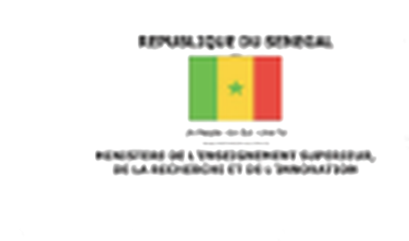
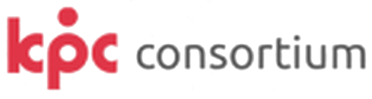

Qu'est-ce que le programme Idea Lab ?
Idea Lab est un programme d'accompagnement qui aide des porteurs de projets à passer de l'idée à un prototype testé auprès de vrais utilisateurs.
Chaque cohorte comprend :
- des ateliers de découverte client ;
- un accompagnement individuel par des mentors ;
- une journée de présentation devant les partenaires.
PARTENAIRES


IDEA LAB · PROGRAMME
3